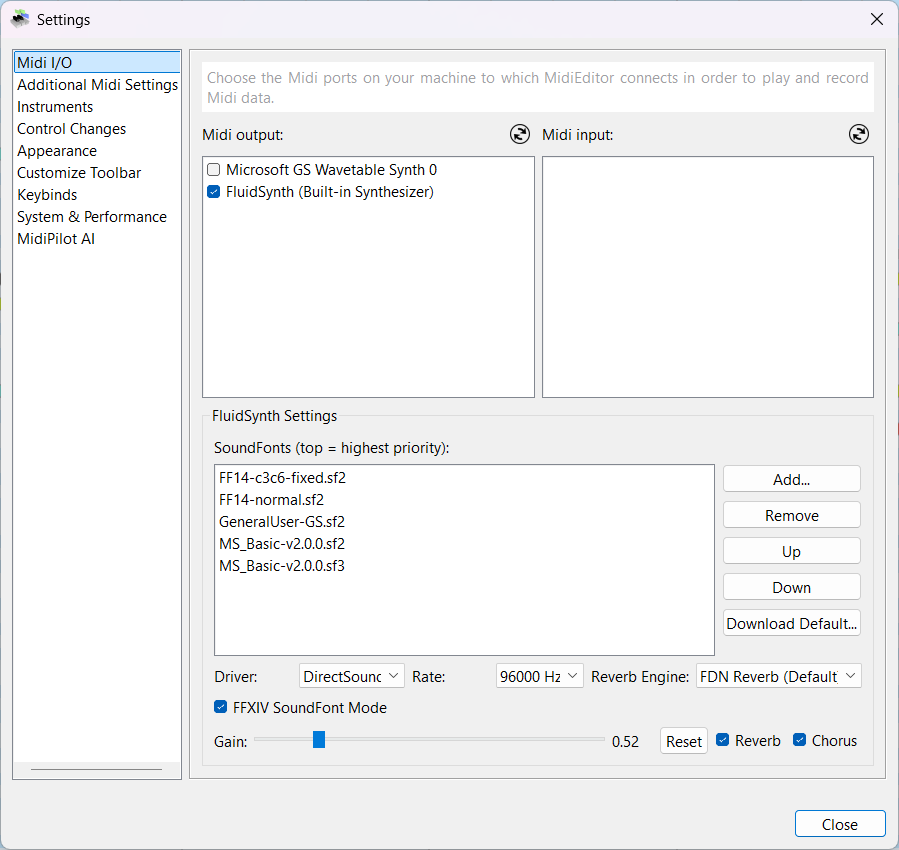
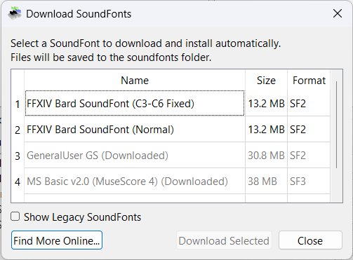
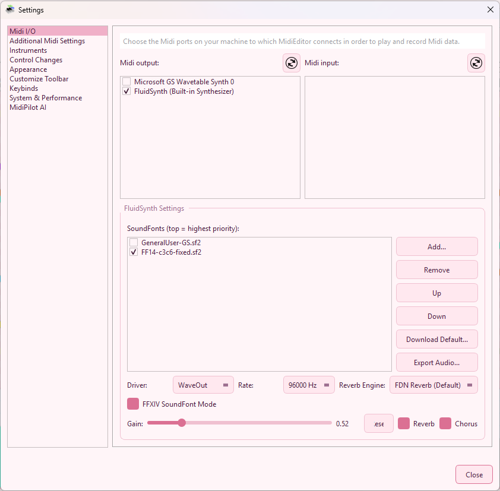

MidiEditor AI includes a built-in FluidSynth synthesizer so you can play back MIDI files without any external software. FluidSynth renders audio from SoundFont files (.sf2/.sf3) which contain sampled instrument sounds. No drivers, no DAWs, no setup — just open a file and press play.
Note: The FluidSynth integration is based on upstream work from the Meowchestra/MidiEditor project, extended with FFXIV-specific features in MidiEditor AI.
Open MIDI → Settings… and select the Midi I/O card. When FluidSynth is available you will see it listed as an output device (FluidSynth (Built-in Synthesizer)) plus a dedicated FluidSynth Settings panel below the I/O lists.

| Setting | Description |
|---|---|
| SoundFont list | Loaded SoundFonts in priority order (top = highest). Use Add…, Remove, Up, Down to manage. |
| Driver | Audio output driver (DirectSound, WASAPI, etc.). |
| Rate | Sample rate in Hz. Higher values sound better but use more CPU. |
| Reverb Engine | Choose the reverb algorithm (FDN Reverb is recommended). |
| Gain | Master volume (0.0 – 1.0). Click Reset to restore the default. |
| Reverb / Chorus | Toggle built-in reverb and chorus effects. |
| FFXIV SoundFont Mode | Special mode for FFXIV Bard SoundFonts — see below. |
SoundFont files are stored in the soundfont/ folder next to the MidiEditor executable.
You can add SoundFont files in three ways:
.sf2 or .sf3 file on your system. It will be copied into the soundfont/ folder automatically..sf2/.sf3 files directly into the soundfont/ folder, then restart MidiEditor or re-open settings.
Click Download Default… to open the built-in SoundFont downloader. It lists curated
SoundFonts with name, size, and format. Select one or more entries and click
Download Selected. Files are saved to the soundfont/ folder and appear in the
SoundFont list immediately.

Available SoundFonts in the download dialog:
| # | Name | Size | Format | Description |
|---|---|---|---|---|
| 1 | FFXIV Bard SoundFont (C3-C6 Fixed) | 13.2 MB | SF2 | FFXIV instrument samples with corrected octave range (C3–C6). Recommended for bard performance. |
| 2 | FFXIV Bard SoundFont (Normal) | 13.2 MB | SF2 | FFXIV instrument samples with original range. |
| 3 | GeneralUser GS | 30.8 MB | SF2 | High-quality General MIDI / GS SoundFont covering all 128 GM programs. |
| 4 | MS Basic v2.0 (MuseScore 4) | 38 MB | SF3 | Large General MIDI SoundFont from MuseScore. Compressed SF3 format. |
Check Show Legacy SoundFonts to reveal older or less common options. Click Find More Online… to open a web search for additional SoundFonts.
When multiple SoundFonts are loaded, FluidSynth resolves each program-change request top-to-bottom. The first SoundFont that contains the requested bank/program wins. Use the Up and Down buttons to reorder.
Typical stack for FFXIV playback:
FF14-c3c6-fixed.sf2 — FFXIV instruments (top priority)GeneralUser-GS.sf2 — fallback for any programs not in the FFXIV fontEach SoundFont in the list has a checkbox. Unchecking a SoundFont disables it — it stays in the list but is not loaded into FluidSynth. This is useful when you want to temporarily mute a SoundFont without removing it from the stack.

The enabled/disabled state is saved across sessions. When you restart MidiEditor AI, each SoundFont remembers whether it was checked or unchecked.
SoundFonts with “ff14” or “ffxiv” in the filename are recognized as FFXIV Bard SoundFonts. When you check or uncheck such a SoundFont:
This saves you from manually toggling the mode checkbox every time you switch between FFXIV and General MIDI SoundFonts.
FFXIV Bard SoundFonts store all instruments in Bank 0 with unique program numbers. Standard MIDI files, however, typically spread instruments across different MIDI banks. When FFXIV SoundFont Mode is enabled, MidiEditor AI:
This mode only takes effect when FluidSynth is the active output device. It has no effect on external MIDI outputs or on the saved file.
| Track Name Contains | Program |
|---|---|
| Timpani | 47 |
| Bongo | 116 |
| Bass Drum | 117 |
| Snare Drum | 118 |
| Cymbal | 119 |
Tracks whose names do not match any of the above are left unchanged on Channel 10.